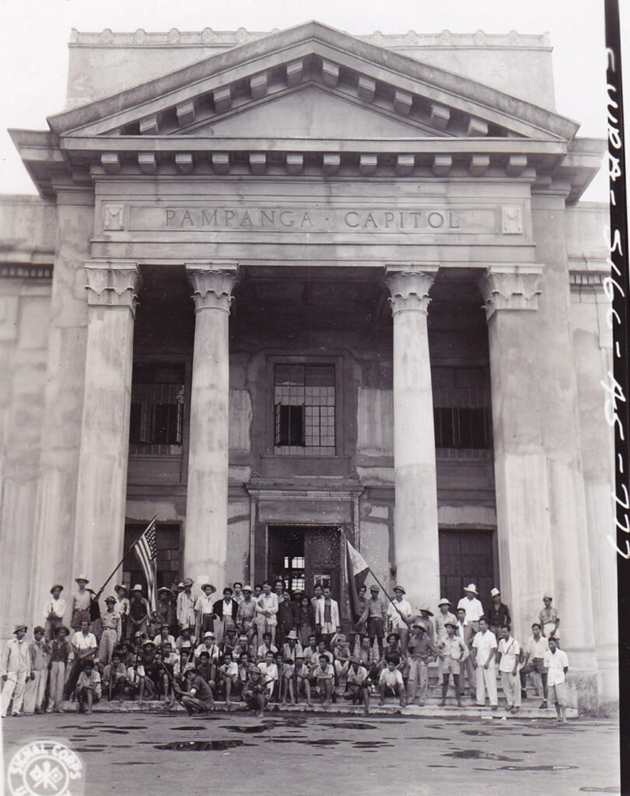
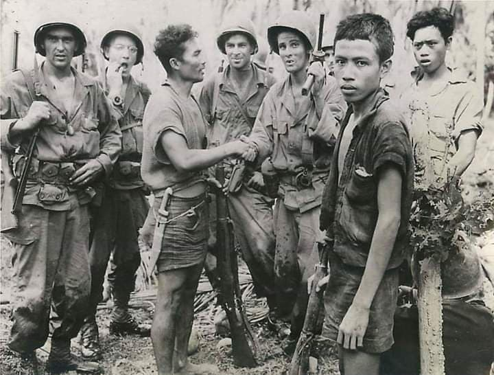
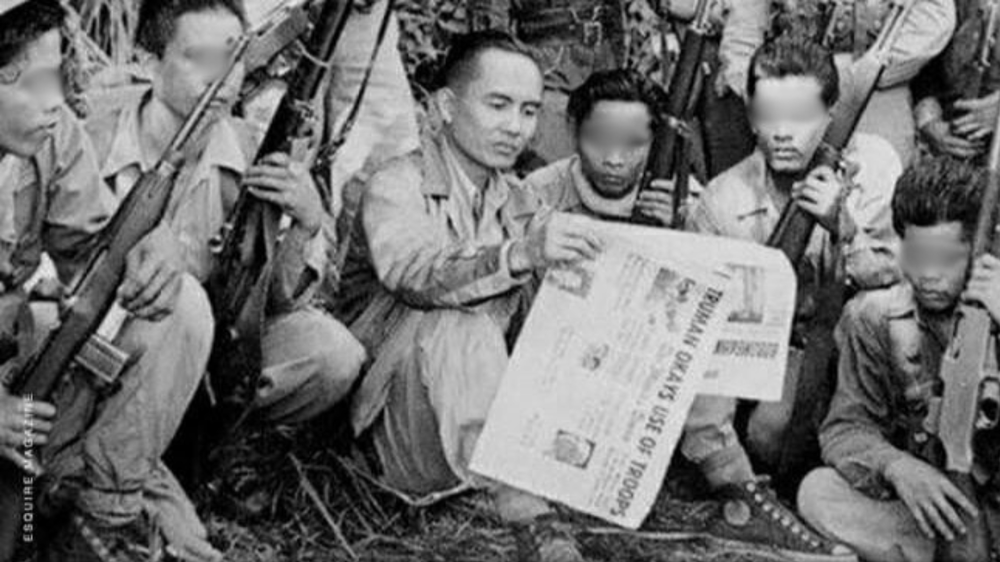
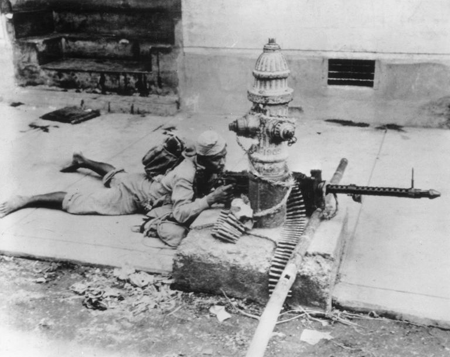

The History of the Hukbalahap is a compelling and often turbulent narrative woven into the fabric of 20th-century Philippine History. More than just a simple armed movement, the Hukbalahap, or Hukbong Bayan Laban sa Hapon (People’s Army Against the Japanese), represented a complex confluence of agrarian grievances, anti-colonial resistance, and ideological struggle. Its story spans several critical periods, from its formation during the Japanese occupation through its transformation into an anti-government Huk rebellion in the post-war Philippines, profoundly influencing the country’s political, social, and economic landscape.
Overview

Timeline
1942
Formation
Hukbalahap was to be part of a broad united front resistance to the Japanese occupation of the Philippines. This original intent is reflected in its name: "Hukbong Bayan Laban sa mga Hapon", which means "People's Army Against the Japanese.".
1946
Postwar Struggle
Communist-led peasant uprising in central Luzon, Philippines. The name of the movement is a Tagalog acronym for Hukbo ng Bayan Laban sa Hapon, which means “People’s Anti-Japanese Army.”
1950
Peak of Rebellion
the Communist Party of the Philippines PKP had resolved to reconstitute the organization as the armed wing of a revolutionary party, prompting a change in the official name to Hukbong Mapagpalaya ng Bayan, (HMB) or "Peoples' Liberation Army," likely in emulation of the Chinese People's Liberation Army.
1954
Decline
Leader Luis Taruc surrenders, marking the decline of the movement.
Gallery

Hukbalahap soldiers in the field

Luis Taruc, Hukbalahap leader

Hukbalahap fighters
Legacy
The Hukbalahap movement left a lasting impact on the Philippines, highlighting persistent agrarian issues and rural poverty that continued fueling tensions. Though suppressed, the rebellion forced land reform onto the national agenda, with groups like the PKM continuing peasant advocacy through legal means. The government's counterinsurgency approach under Magsaysay—combining military action with socio-economic reforms—became a model, though unevenly applied.
The rebellion's failure led to Philippine Communist Party (PKP) fractures, eventually birthing the CPP and NPA insurgency, which drew lessons from Huk struggles. The movement underscored the link between social injustice and instability, emphasizing the need for inclusive development and peasant representation.
As a Cold War flashpoint, the Huk rebellion drew heavy U.S. intervention, skewing Philippine policies toward anti-communism over structural reforms. The Huk legacy endures as a case study in post-colonial conflict, agrarian unrest, and the clash of local grievances with global ideologies, remaining key to understanding Philippines' unresolved struggles for equity and peace.